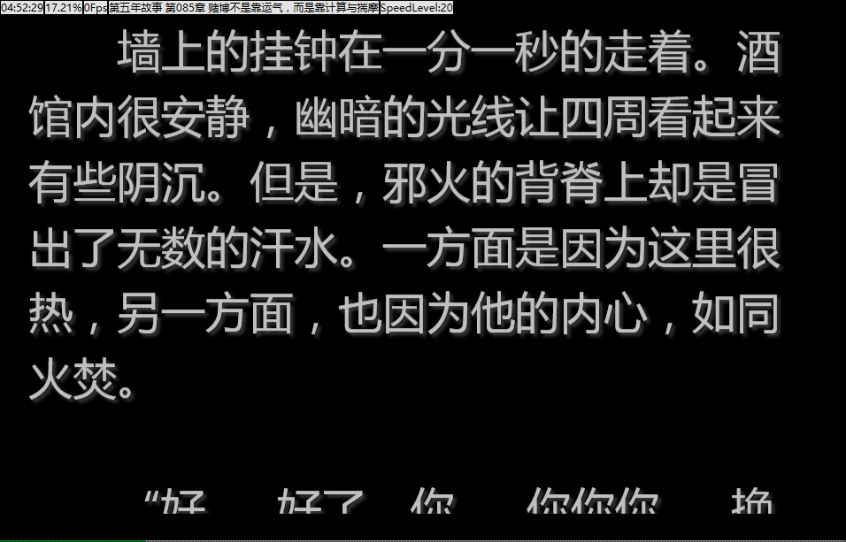

文本显示部分是为我们显示小说内容的地方，我们可以在这阅读小说。
在这个界面上，我们可以执行以下操作：
| 双击鼠标 | 开启/关闭滚屏 |
| 鼠标拖动 | 上下滑动内容 |
| shift+鼠标拖动 | 拖动窗口 |
| 鼠标右键 | 弹出右键菜单 |
| 鼠标靠近右边界 | 弹出工具面板 |
| 鼠标靠近下边界 | 弹出进度条 |
| Esc | 最小化界面到托盘 |
| Ctrl+T | 最小化界面到托盘/从托盘状态恢复 |
| Ctrl+F | 弹出搜索框 |
| , < | 加快滚屏[1] |
| . > | 减慢滚屏[1] |
| Ctrl+O | 打开文件 |
| Alt+X | 退出程序 |
各项功能说明
| 打开 | 打开一本新小说 |
| 关闭 | 关闭当前小说 |
| 重开 | 重新打开当前小说，部分数据的更新需要此功能 |
| 搜索 | 弹出搜索框 |
| 滚屏 | 开启/关闭滚屏功能 |
| 边框 | 显示/隐藏程序的边框 |
| 全屏 | 切换全屏/窗口状态 |
| 隐藏到托盘 | 隐藏程序到托盘 |
| 退出 | 退出程序 |
[1] 本程序的滚屏是由不断的更新窗口来实现的，所以会有帧率。